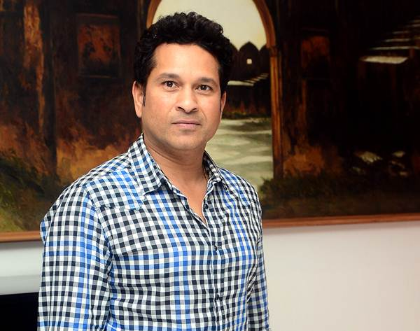
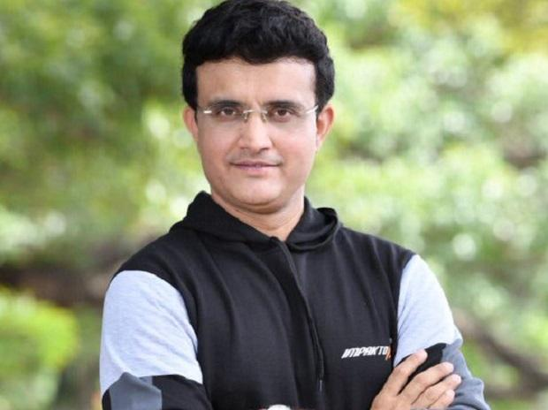

GLENN-MCGRATHGlenn Donald McGrath born 9 February 1970 is an Australian former international cricketer, who played all formats of the game for 14 years. He was a fast-medium pace bowler and is considered one of the greatest bowlers of all time, and a leading contributor to Australia's domination of world cricket from the mid-1990s to the mid 2000s McGrath is one of the director of MRF Pace Foundation |
|
SACHINSachin Ramesh Tendulkar born 24 April 1973 is an Indian former international cricketer and a former captain of the Indian national team. He is widely regarded as one of the greatest batsmen in the history of cricket. He is the highest run scorer of all time in International cricket. |
 |
GANGULYSourav Chandidas Ganguly born 8 July 1972, affectionately known as Dada (meaning "elder brother" in Bengali), is an Indian cricket administrator, commentator and former national cricket team captain who is the 39th and current president of the Board of Control for Cricket in India. During his playing career, Ganguly established himself as one of the world's leading batsmen and also one of the most successful captain of the Indian national cricket team. While batting, he was especially prolific through the off side, earning himself the nickname God of the Off Side for his elegant stroke play square of the wicket and through the covers. |
 |